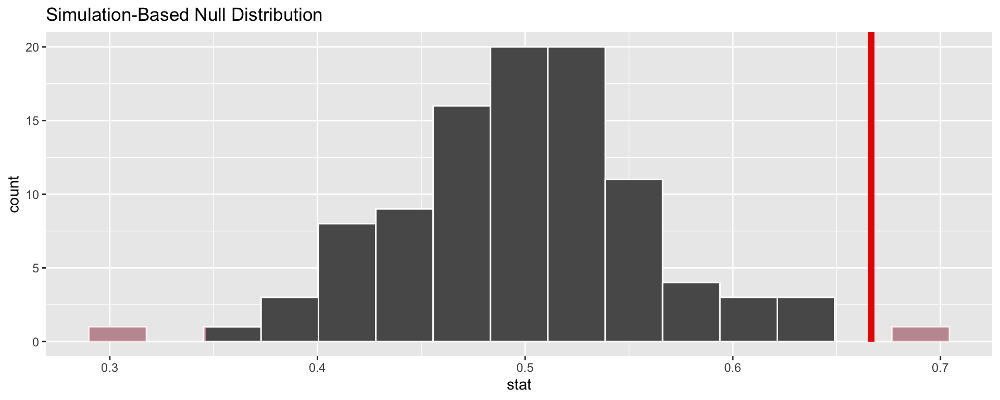

Lecture 14: Generalizations
STAT 20 UC Berkeley
First Things First
First Things First
What to expect from lab today:
Question 2 parts g-k, Question 1-2 Workshop
I strongly recommend you attend, as the back half of Question 2 was designed to be done in lab.
Hypothesis Tests
Structure of a Hypothesis Test
There are two competing claims.
Null Hypothesis, \(H_0\)
“There is nothing going on”.
- Promotion and gender are independent.
- No gender discrimination.
- Observed difference in proportions is simply due to chance.
Alternative Hypothesis, \(H_A\)
“There is something going on.”
- Promotion and gender are dependent.
- There is gender discrimination.
- Observed difference in proportions is not due to chance.
Trial as a Hypothesis Test

\(H_0\) : Defendant is innocent vs. \(H_A\) : Defendant is guilty
- Present evidence / collect data.
- Judge the evidence: “Could these data plausibly have happened by chance if the null hypothesis were true?”
- If they were very unlikely to have occurred, then the evidence raises more than a reasonable doubt in our minds about the null hypothesis.
If the evidence is weak
- If the evidence is not strong enough to reject the assumption of innocence, the jury returns with a verdict of not guilty.
- The jury does not say that the defendant is innocent, just that there is not enough evidence to convict.
- Said statistically: we fail to reject the null hypothesis, or the data is consistent with our model.
We never accept the null hypothesis.
Why not?
Why don’t we accept \(H_0\)?
The hypothesis test gives us:
\[ P(\textrm{data}\,|\,\textrm{H}_0) \]
It doesn’t give us:
\[ P(\textrm{H}_0\,|\,\textrm{data}) \]
These are not the same thing.
\[ P(\textrm{Can't see the sun}\,|\,\textrm{Raining}) \ne P(\textrm{Raining}\,|\,\textrm{Can't see the sun}) \]
Structure of a Hypothesis Test
Start with a null hypothesis ( \(H_0\) ) that represents the status quo and an alternative hypothesis ( \(H_A\) ) that represents our research question, i.e. what we’re testing for.
Calculate the observed test statistic: an encapsulation of the evidence.
Find the null distribution of the test statistic under the assumption that \(H_0\) is true, either via simulation (our focus) or mathematical methods.
If the location of the observed test statistic on the null distribution suggests that the data is consistent with \(H_0\), we stick with the \(H_0\). Otherwise, we reject the \(H_0\) in favor of \(H_A\).
Obtaining the null distribution
Much like with confidence intervals and sampling distributions, the different types of hypothesis tests we can perform can be classified by different ways in which we obtain the null distribution for a test statistic (and what we consider the test statistic to be itself).
We will be discussing two different ways to construct null distributions:
Simulation (Permutations)
Simulation (Taking draws)
Evaluating our test results
A p-value is the probability of observing the value of the observed test statistic or one more extreme if \(H_0\) is true.
The purpose of computing the p-value is to compare it to a significance level \(\alpha\) which is between 0 and 1. This \(\alpha\) is not entirely unrelated to the one we mentioned when defining confidence level.
Note: \(\alpha\) should be set before running the test, for integrity purposes.
- The most common value of \(\alpha\) is \(.05\), though others can be used depending on your situation.
The p-value and \(\alpha\)
- We reject the null hypothesis when
\[\textrm{p-value} < \alpha\]
- The smaller the \(\alpha\), the harder it is to reject your null hypothesis.
Hypothesis Testing - Simulation (Permutations)
We now return to the sex discrimination case study we began discussing yesterday.
The Experiment
Question: Are females unfairly discriminated against in promotion decisions?
- 48 male supervisors given the same personnel file.
- Files were randomly assigned to the supervisors.
- Asked: promote or not.
- Files were identical except gender.
The Data
| Gender | promote | nopromote |
|---|---|---|
| Male | 21 | 3 |
| Female | 14 | 10 |
\[\textrm{Prop. males that are promoted} = 21/24 = 0.875 \\ \textrm{Prop. females that are promoted} = 14/24 = 0.583\]
At a first glance, does there appear to be a relationship between promotion and gender?
Gender discrimination: \(H_0\) test Step 1
What is the null hypothesis?
\(H_0\): There is no gender discrimination
Alternatively:
\(H_0\): Gender and promotion are independent
Gender discrimination: \(H_0\) test Step 1
What is the alternative hypothesis?
\(H_A\): There is gender discrimination
Alternatively:
\(H_A\): Gender and promotion are not independent
Gender discrimination: \(H_0\) test Step 2
What is our test statistic?
We will consider the difference in the proportion of males promoted and the proportion of females promoted. Mathematically, this is:
\(d = \hat{p}_{M} - \hat{p}_{F}\)
Gender discrimination: \(H_0\) test Step 2
| Gender | promote | nopromote |
|---|---|---|
| Male | 21 | 3 |
| Female | 14 | 10 |
We can compute our observed test statistic:
\[d_{obs} = \hat{p}_{M} - \hat{p}_{F} d_{obs} = 21/24 - 14/24 = .29\]
Constructing the Null Distribution
- We will construct our null distribution via a simulation.
Face cards: 13 files not promoted
Number cards: 35 files promoted
Constructing the Null Distribution
To mimics the process of each supervision being randomly assigned a male or female file, shuffle the deck and deal it into two piles of twenty four.
Compute the proportion that is promoted in each pile:
\[d = \hat{p}_{M} - \hat{p}_{F}\]
Repeat steps 1-2 many times and store each proportion calculated.

To mimic this process a bit quicker, we’ll shuffle data frames using R. We will be using the
inferlibrary.
Simulation using infer

Do the results of the simulation you just ran provide convincing evidence of gender discrimination against women, i.e. dependence between gender and promotion decisions?
Evaluating our Test Results
In a simulation setting, the p-value is the proportion of test statistics simulated assuming \(H_0\) is true that are more extreme than the observed test statistic.
Of the 5000 simulated test statistics, 280 of them were more extreme than the observed value of 0.29.
P-value: 0.056.
Evaluating our Test Results
We obtained generally low p-value. We would reject the null hypothesis at many reasonable levels of \(\alpha\).
We then conclude that there is indeed sex discrimination taking place in this company when it comes to employment.
Hypothesis Testing - Simulation (Taking Draws)
We will now move to a different case study: the opinions of millennials on same-sex marriage.
Millennials and same-sex marriage
In the national debate on same-sex marriage, it is commonly stated that half of all Americans favor same-sex marriage.
In 2014, Pew Research conducted a poll of millennials (Americans born after 1980) and found that 67% answered yes when asked:
“Do you favor same-sex marriage?”
- The poll was a random sample of 75 millennials. Does this poll provide convincing evidence that the opinion of millennials is different from those of Americans at large?
Finding the Null Distribution: Simulation (Taking Draws)
- If a null hypothesis concerns a particular value that a proportion should take (we call this hypothesis this a point null), then you can generate data under that null hypothesis by a process taking draws from the distribution which the proportion belongs to.
The Test
Let \(p\) be the true proportion of millennial Americans who favor same-sex marriage.
In our case, we have:
\[H_0: p = 0.5; \quad H_A: p \ne 0.5\]
- \(H_0\) here is considered a point null.
Simulation (How to take draws)
- Flip 75 fair coins.
- Calculate the proportion of the 75 coins that came up heads.
- Repeat 1-2 a large number of times, keeping track of those proportions.
Generating a null Distribution with 100 reps
p-value: 0.02.
Evaluating our results
With a low p-value of \(0.02\), our data is inconsistent with the hypothesis that millennials support same sex marriage at the same rate as Americans in general.
Therefore, we reject the null hypothesis that \(p = .5\) at an \(\alpha\) level of .05, for example.
Hypothesis Testing with infer
- At this point, we visited the course server to discuss how we can perform hypothesis testing under the two simulation frameworks with
infer.
Break
What if our conclusion is wrong?
What if our conclusion is wrong?
There can be times when our decision based on our test results end up being incorrect. There are two ways we can falter:
We reject the null hypothesis when it is true.
We do not reject the null hypothesis when it is false.
These two mishaps are called Type I and Type II errors, respectively.
Representing Type I and Type II errors using a table
Representing Type I and Type II errors visually
What affects the error rates?
Sample size, \(n\): with increasing \(n\), the variability of the null distribution will decrease.
Changing \(\alpha\): decreasing \(\alpha\) will decrease type I error but increase type II error.
Increasing effect size: change data collection process to separate the distribution under \(H_A\) and decrease type II error.
- Ex: If you’re testing whether a pain medicine provides pain relief, only conduct the test if you are using a medicine that you expect to have cause a dramatic decrease in pain.
Exercise: Which type of error is considered worse, if any?
- Consider a setting where the Cal UHS testing system observes a COVID-19 positivity rate of 5.5% in a one week interval: double that of the previous week. Administration needs to decide whether or not to move to remote learning. Which error would be worse?
Moving to remote instruction when in fact the true number of cases on campus is still low.
Failing to move to remote instruction when in fact the true number of cases on campus is elevated.
Exercise: Which type of error is considered worse, if any?
- In the context of this problem, identify:
A possible null hypothesis.
A possible alternative hypothesis.
What type of error is item 1.?
What type of error is item 2.?
Statistical Power
- Statistical power is the probability that you will reject the null hypothesis if it is in fact false.
\[ P(\textrm{reject } H_0 | H_0 \textrm{ is false}) \]
Statistical Power
This is a quantity we can (and should) control.
- Calculating the power for a given scenario is beyond the scope of this course, but here is a link to an application that can do this for you depending on your scenario. There are many other resources online which can help you.
The larger the power, the more likely you are to find an effect.
End of Lecture 14